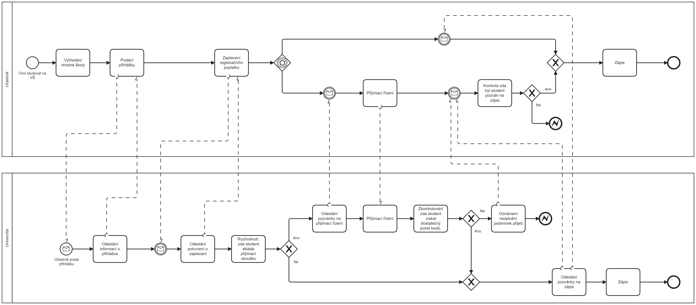

Webové portfolium s mými projekty.
Cizinci
Tento projekt byl výsledkem mojí bakalářské práce, výsledkem je relační databáze s počtem cizinců v ČR mezi lety 2004 - 2020.
Leaflet
Showcase knihovny Leaflet
Webové portfolio
Odkaz na zdrojový kód webového portfolia, které si právě prohlížíte.
Úkol OSA
Grafické řešení úkolu na předmět OSA.
Značkovací jazyky - část 1
V této části jsem vytvořil data falešné sociální sítě, v té má každý svůj profil a s ním spojené příspěvky. Na tyto příspěvky je možné reagovat buď lajkem a nebo nějakým komentářem. Účet je možné také deaktivovat, což vede ke skrytí příspěvků vytvořených uživatelem. K těmto datům je pak vytvořeno schéma a transformace na HTML, jehož vylepšenou verzi si můžete prohlídnout níže.
Značkovací jazyky - část 2
V této části jsem popsal mojí bakalářskou práci.
Procesní modelování
Tento projekt obsahuje BPMN diagramy vytvořené pro předmět Procesní modelování.
